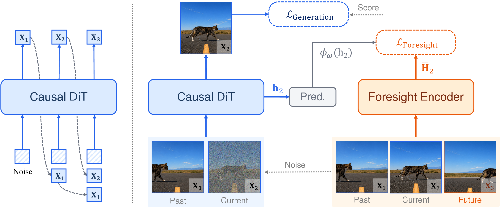

Autoregressive Video Diffusion Models Need Foresight
Video-Mirai closes the representation-level
planning gap of causal video generators by letting
future segments supervise the
current causal state — at training time only.
A segment may look correct in isolation while failing to specify what must remain true later.
Present-segment supervision is under-constrained: many hidden states can generate the same
plausible current segment, but only some retain identity, layout, and motion cues that future
segments will need. We call this the
representation-level planning gap.
Prompt:
Baseline
Video-Mirai
Baseline
Video-Mirai
Pick a different prompt to swap clips
§ 2 Method
Use foresight as supervision, not as input.
The causal generator rolls out causally under the same mask used at inference. A frozen foresight
encoder then reads the completed rollout — including future segments — and produces future-aware
feature targets. A lightweight predictor maps each causal hidden state to its fused target via
a cosine loss. After training, the foresight encoder and predictor are discarded.

Overview of Video-Mirai.
We take a three-segment video as an example. The causal DiT denoises
X₂ from its noisy version conditioned on
X₁ via KV-cache. A frozen foresight encoder processes the causal
DiT’s clean rollout
{X₁, X₂, X₃}, including the future segment
X₃. A predictor maps the causal DiT’s hidden state
h₂ into the encoder’s space, where the foresight loss aligns it with
the encoder’s fused hidden state
H̄₂, which contains foresight information.
Stopped-gradient targets fused across a small look-ahead window $\Delta = \{0,1\}$;
a 3-block DiT predictor at mid-depth ($\alpha\!=\!0.5$) projects the causal hidden state.
Key properties
The future is never fed into the generator at inference.
The encoder is the same Wan-14B already used by the DMD score teacher — no extra parameters at deployment.
Drop-in on top of Self-Forcing and Causal-Forcing; frame-wise and chunk-wise.
§ 3 Interactive Playground
See what the model has internalized about the future.
Two interactive probes. The first looks inside the causal generator and asks: how much of the
future can be decoded from its current hidden state? The second varies the look-ahead window the
model was trained with and shows how visual quality and consistency move.
Demo · Foresight Readout Probe
Decoding the future from a frozen hidden state
An MLP readout reconstructs future RGB from layer-15 features — frozen at probe time.
Current frame
Baseline readout
Video-Mirai readout
Future frame
Prompt
Look-ahead Δ1
Higher Δ asks the predictor to recover frames further in the future. Video-Mirai degrades gracefully; the baseline collapses to the current frame.
Demo · Readout vs. Rollout Average
Video-Mirai internalizes the future distribution
The one-shot readout from the frozen Video-Mirai hidden state closely matches the
empirical average of 4 stochastic causal rollouts from the same starting frame —
evidence that the hidden state encodes the marginal future distribution, not just
one trajectory.
Current frame
Readout
Rollouts average
Readout
Sample 4×
Stochastic rollouts
Average
≈
Hover any Readout or Stochastic rollouts to highlight its
relation to Rollouts average.
Demo · Foresight Window Ablation
Train with different look-ahead windows
Each button corresponds to a separately trained model (Table 1 in paper).
$\{0,1\}$ — current plus one-segment lookahead — gives the best Quality and Total.
§ 4 Quantitative Results
Drop-in gains across settings, amplified beyond the training horizon.
Method
Quality 5s
Semantic 5s
Total 5s
Subj. Cons. 30s
Bg. Cons. 30s
Overall 30s
Best within each baseline pair in bold. All variants use the same training prompts and budget.
§ 5 Gallery
Generation quality, within and beyond the training horizon.
Each card shows a baseline / Video-Mirai pair on the same prompt.
5-second generations
Within the training horizon.Click to toggle view
30-second rollouts
Beyond the training horizon.Click to toggle view
Video-Mirai composes with Rolling-Sink
for minute-level long-video generation. The 30-second clips above are produced by stacking
Rolling-Sink on top of the Video-Mirai foresight checkpoint, beyond the 5-second training horizon.
§ 6 Cite
BibTeX
If you find this work useful, please cite:
@article{yu2026videomirai,
title = {Video-Mirai: Autoregressive Video Diffusion Models Need Foresight},
author = {Yu, Yonghao and Huang, Lang and Li, Runyi and Wang, Zerun and Yamasaki, Toshihiko},
journal = {arXiv preprint},
year = {2026}
}